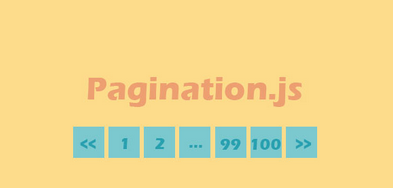
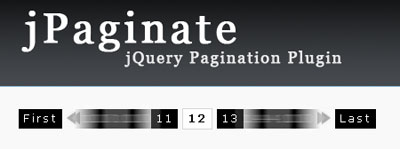

一个网站的内容分页是不可缺少的一部分，分页将冗长的文章或网页内容划分为多个页面，缩减单页面的阅读量，提升网站访问者的浏览舒适度，因此必须让内容有组织性和易于访问。分页有手动分页和自动分页，目前比较受欢迎且应用广泛的方法是使用jQuery分页插件。下面w3cschool就收集了一些实用的jQuery分页插件下载资源，缩减你的代码工作量，但并不是所有的插件都很完美高效，使用之前还是需要仔细检查一下。
1、Pagination.js
Pagination.js是一款简单实用且功能齐全的jQuery分页插件。该jQuery分页插件提供多种数据源方式，众多的配置参数，回调函数，显示控制等，还提供了5套内置的分页条皮肤。

2、jPaginate
jPaginate是一个比较奇特的jQuery分页插件。当用户点击页码或鼠标移到箭头时，页码会向前或向后滚动。

3、3D分页翻转滑块
3D分页翻转滑块是一款使用网格样式与滑块效果分页的jquery分页插件。

4、类似媒体播放器的分页插件
这是一款类似媒体播放器的jQuery分页插件,有点类似于媒体播放器的效果.带有数码翻页,可前后翻页,首页到最后一页。

5、长文本分页特效
这是一款基于jquery实现的长文本索引按钮切换特效。

6、结合CSS3实现的jQuery分页插件
这是一款结合CSS3实现的非常简洁漂亮的jQuery分页插件，附件里提供了三个效果,代码简洁。

7、jquery列表分页并带左右滚动的效果
当每一页文章条数超过3条就会分一页，并带有索引按钮，点击按钮能左右切换，效果不错而且好用。

8、简单实用的分页插件
这是一款兼容IE8及以上浏览器，配置简单实用，推荐下载。

相关阅读
jQuery EasyUI 教程：jQuery EasyUI 基础插件 - Pagination 分页